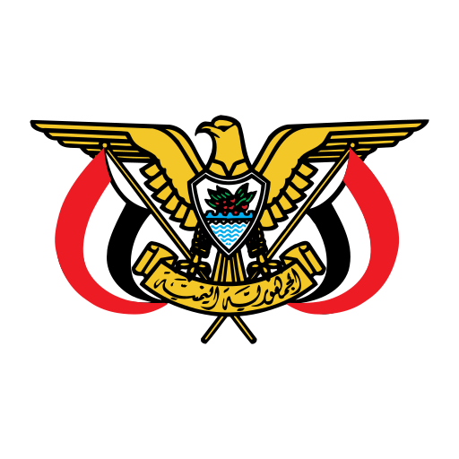

🚨 BREAKING MILITARY EVENT

مرصد اخباري شامل
› جاري التشغيل
مرصد·
اخباري
الإصدار 0.1
التوقيت العالمي
00:00:00
2026.04.20
الأحداث · 24 ساعة
0
+184
المناطق النشطة
0
/195
مستوى التهديد
LOW
01
الخريطة المباشرة
02
الجدول الزمني
03
الشبكة
04
التحليلات
المنطقة · عالمي
▾
النافذة · 24 ساعة
▾
⌘K
⟳
تلقائي
إيقاف
⬇ تصدير
01
تصنيف الحدث
5 / 5
02
مؤشر التهديد الإقليمي
عالمي
هادئ
مرتفع
حرج
الحالي
مرتفع · T3
03
قائمة المراقبة الإقليمية
σ · 1 ساعة
0
البث الوارد · الأحداث المباشرة
مباشر
🗑️ مسح القائمة
🔍 بحث
✕ إلغاء البحث
📥 JSON
📊 CSV
الكل
00
صراع
00
نزاع
00
سياسية
00
اقتصادية
00
قتالية
00
تليجرام
00
05
البث المباشر · القنوات والكاميرات
الجزيرة ⟳
1-5
فلترة التصنيفات
سحب
تدوير الكرة
⌘K
الانتقال إلى مدينة
Esc
إغلاق اللوحة
البث المباشر
البث · طبيعي
التأخير · 42MS